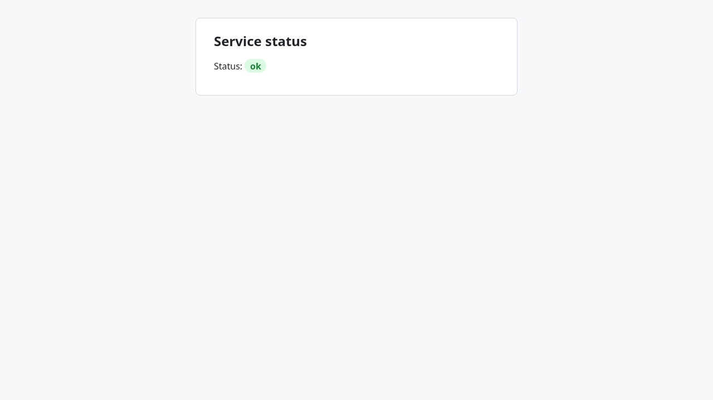
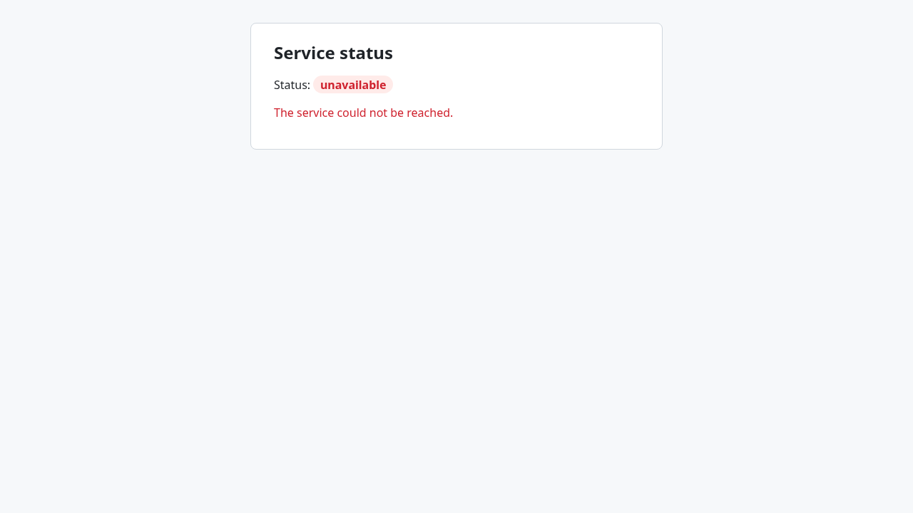

Orchestrator Completed
| Loop | Status | Reason | Started | Ended |
|---|---|---|---|---|
| backend-dev | Completed | 2026-09-27T13:51:39.327Z | 2026-09-27T13:54:48.930Z | |
| frontend-dev | Completed | 2026-09-27T13:54:00.887Z | 2026-09-27T13:56:42.655Z |
Handoff
- API spec
/data/space/workspace/claude-loops/workspaces/smoke-orch/backend-dev/outputs/openapi.jsonsha256 dc8c47f52a2842e03bd8b7d293977ce92e8c189c9844baab8565293d8bb4362c- Backend start_command
node server.js- Backend cwd
/tmp/claude-1000/-data-space-workspace-claude-loops/19246cf3-3402-4e12-8fb8-9e1c0e715583/scratchpad/t076/orch/backend- Backend base_url
http://127.0.0.1:8000- Backend ready_url
http://127.0.0.1:8000/health
Trial timeline
Cost by milestone
Table view
| Milestone | Cost |
|---|---|
| backend-dev · Planning | $0.13 |
| backend-dev · M01 | $0.31 |
| frontend-dev · Planning | $0.18 |
| frontend-dev · M01 | $0.51 |
Cost by step
Table view
| Step | Cost |
|---|---|
| implement | $0.50 |
| plan | $0.31 |
| validate-ui | $0.22 |
| author-checks | $0.10 |
backend-dev Completed
progress.md · plan summary · final report · OpenAPI document
Stack
Proposed: Node.js (>=18) using only the built-in http module, with no third-party dependencies. The target directory is empty and neither the requirements nor the configuration name a stack. A dependency-free Node server is the simplest common option for a single JSON endpoint: nothing to install, it starts fast, and unit tests run with the built-in node:test runner.
Source: proposed
Runtime
- install_command
npm install- start_command
node server.js- cwd
.- base_url
http://127.0.0.1:8000- ready_url
http://127.0.0.1:8000/health- openapi_path
openapi.json- unit_test_command
node --test
Target: /tmp/claude-1000/-data-space-workspace-claude-loops/19246cf3-3402-4e12-8fb8-9e1c0e715583/scratchpad/t076/orch/backend
Milestones
M01 Health endpoint Achieved
Add a runnable Node.js HTTP server whose GET /health endpoint returns {"status":"ok"} as JSON, and document it in openapi.json.
Tasks
- ✓ M01-T01 Project scaffold HEALTH-1Create package.json (name, private, "type": "commonjs", scripts: start = "node server.js", test = "node --test") with no dependencies, so that `npm install` succeeds as a no-op.
- ✓ M01-T02 HTTP server with GET /health HEALTH-1Create app.js, which exports a request handler, and server.js, which listens on process.env.PORT (default 8000) at host 127.0.0.1. GET /health answers 200 with Content-Type application/json and the body {"status":"ok"}. Any other path answers 404 with a JSON error body {"error":"not found"}. Any other method on /health answers 405 with a JSON error body and an Allow: GET header. Every response carries Access-Control-Allow-Origin: *, so a separately served status page can fetch the endpoint.
- ✓ M01-T03 OpenAPI document HEALTH-1Create openapi.json (OpenAPI 3.0.3) that documents only GET /health, with a 200 response whose application/json schema is an object with a required string property `status` (enum ["ok"]) and example {"status":"ok"}.
- ✓ M01-T04 Unit tests HEALTH-1Add test/health.test.js using node:test. It starts the handler on an ephemeral port and checks that GET /health returns 200 with the JSON body {"status":"ok"}, and that an unknown path returns 404.
Acceptance criteria (trial 1 validation)
| Criterion | Result | Observed | Evidence |
|---|---|---|---|
| M01-AC1 GET http://127.0.0.1:8000/health responds with status 200, a Content-Type header starting with application/json, and a body that parses as JSON equal to {"status":"ok"}. | Passed | C1 passed | C1.body C1.headers |
| M01-AC2 The GET /health response includes the header Access-Control-Allow-Origin: *, so a status page served from another origin can read it. | Passed | C2 passed | C2.body C2.headers |
| M01-AC3 GET http://127.0.0.1:8000/does-not-exist responds with status 404 and a JSON error body. | Passed | C3 passed | C3.body C3.headers |
| M01-AC4 openapi.json is a valid OpenAPI 3 document whose paths contain exactly one operation, `get` on /health, with a 200 application/json response schema that has the property `status`. | Passed | C1 passed | C1.body C1.headers |
HTTP checks
| Check | Result | Command | Status |
|---|---|---|---|
| C1 | Passed | curl -sS --max-time 30 -X GET http://127.0.0.1:8000/health | 200 |
| C2 | Passed | curl -sS --max-time 30 -X GET http://127.0.0.1:8000/health -H 'Origin: http://status.example.com' | 200 |
| C3 | Passed | curl -sS --max-time 30 -X GET http://127.0.0.1:8000/does-not-exist | 404 |
API contract: Passed
Trials
| # | Kind | Result | Detail | Duration | Cost | Sessions |
|---|---|---|---|---|---|---|
| 1 | implement | Passed | 1m 13s | $0.31 | 6be3f596 1b5ee080 |
frontend-dev Completed
progress.md · plan summary · final report · UI: http://127.0.0.1:5173
Stack
Target directory is empty and neither the requirements nor the configuration name a frontend stack. Proposed: a dependency-free static page (index.html + vanilla JS + CSS) served by a tiny Node.js built-in `http` server (server.js), matching the backend's zero-dependency Node/CommonJS style. The server also serves /config.js exposing the backend base URL from the BACKEND_BASE_URL env var (default http://127.0.0.1:8000, the configured backend), so the address is not hard-coded in page code. The page calls the backend directly via fetch; the backend already sends Access-Control-Allow-Origin: *. Unit tests use node --test.
Source: proposed
Runtime
- install_command
true- start_command
node server.js- cwd
.- base_url
http://127.0.0.1:5173- ready_url
http://127.0.0.1:5173/- unit_test_command
node --test
Target: /tmp/claude-1000/-data-space-workspace-claude-loops/19246cf3-3402-4e12-8fb8-9e1c0e715583/scratchpad/t076/orch/frontend
Milestones
M01 Service status page Achieved
A user opening the frontend sees the backend's service status, fetched via the documented GET /health operation.
Tasks
- ✓ M01-T01 Static server and runtime config HEALTH-1Create package.json (commonjs, scripts start/test) and server.js using Node's built-in http module, listening on 127.0.0.1:PORT (default 5173). Serve index.html at /, static app.js and styles.css, and a generated /config.js that sets window.APP_CONFIG = { backendBaseUrl } from env BACKEND_BASE_URL (default http://127.0.0.1:8000). Unknown paths return 404. The frontend server must not itself expose or proxy /health.
- ✓ M01-T02 Status page UI HEALTH-1Create index.html with a heading 'Service status' and a status element (e.g. data-testid="service-status") that initially reads 'Checking…'. app.js on load calls fetch(`${backendBaseUrl}/health`, { method: 'GET' }) only; on a 200 JSON response it shows the returned status value (e.g. 'ok') with an OK styling; on network error or non-2xx it shows 'unavailable' with an error message. No other backend calls.
- ✓ M01-T03 Unit tests HEALTH-1Add node --test tests: server serves / with the status element, /config.js contains the configured backend URL, and a pure render/format function maps {status:'ok'} to the displayed 'ok' text and failures to 'unavailable'.
Acceptance criteria (trial 1 validation)
| Criterion | Result | Observed | Evidence |
|---|---|---|---|
| M01-AC1 Opening http://127.0.0.1:5173/ in a browser shows a page with the heading 'Service status'. | Passed | Page title is 'Service status' and the page shows a level-1 heading 'Service status' inside main. |  |
| M01-AC2 With the backend running, within a few seconds of load the status element on the page displays the text 'ok', taken from the GET /health response body's status field. | Passed | The paragraph reads 'Status: ok'. The status element shows 'ok' after GET http://127.0.0.1:8000/health returned 200. | |
| M01-AC3 The only backend request the page makes is GET http://127.0.0.1:8000/health (the documented getHealth operation); no undocumented endpoints are called. | Passed | Requests went to 127.0.0.1:5173 for /, /styles.css, /config.js, /status.js and /app.js. The only backend request was GET http://127.0.0.1:8000/health, which returned 200. No other backend endpoints were called. The browser's automatic favicon request to the frontend server returned 404; this is not a backend call. | |
| M01-AC4 If the backend is unreachable, the status element shows 'unavailable' and an error message instead of staying on 'Checking…'. | Passed | GET http://127.0.0.1:8000/health failed with net::ERR_CONNECTION_REFUSED. The page then showed 'Status: unavailable' and the error message 'The service could not be reached.' It did not stay on 'Checking…'. The backend was not actually stopped; the outage was simulated by blocking the request in the browser. |  |


Network requests seen by the browser
| Method | URL | Status |
|---|---|---|
| GET | http://127.0.0.1:5173/ | 200 |
| GET | http://127.0.0.1:5173/styles.css | 200 |
| GET | http://127.0.0.1:5173/config.js | 200 |
| GET | http://127.0.0.1:5173/status.js | 200 |
| GET | http://127.0.0.1:5173/app.js | 200 |
| GET | http://127.0.0.1:5173/favicon.ico | 404 |
| GET | http://127.0.0.1:8000/health | 200 |
| GET | http://127.0.0.1:5173/ | 200 |
| GET | http://127.0.0.1:5173/styles.css | 200 |
| GET | http://127.0.0.1:5173/config.js | 200 |
| GET | http://127.0.0.1:5173/status.js | 200 |
| GET | http://127.0.0.1:5173/app.js | 200 |
| GET | http://127.0.0.1:8000/health |
API contract: Passed
Trials
| # | Kind | Result | Detail | Duration | Cost | Sessions |
|---|---|---|---|---|---|---|
| 1 | implement | Passed | 1m 50s | $0.51 | 0f21a816 b7bad98a |
Questions, assumptions, and retries
Open questions
No questions were raised.
Planning assumptions
| Loop | ID | Assumption | Source |
|---|---|---|---|
| backend-dev | A1 | The "page shows that status" part of HEALTH-1 is a frontend concern and will be built by a frontend step. This backend plan covers only the GET /health endpoint. It adds a permissive CORS header so that page can call the endpoint from another origin. | HEALTH-1; backend-dev loop role |
| backend-dev | A2 | The server listens on 127.0.0.1, on port 8000 by default, and the PORT environment variable can override the port. The requirements do not specify a host or port. | proposed |
| backend-dev | A3 | The stack is proposed (dependency-free Node.js >= 18) because the target directory is empty and neither the requirements nor the configuration name a stack. | empty target_dir; configuration.backend is empty |
| backend-dev | A4 | A 404 for unknown paths and a 405 for non-GET methods on /health are reasonable defaults. They do not add to the requirement or change it. | proposed |
| frontend-dev | A1 | The target directory is empty, so a new dependency-free Node static server + vanilla JS page is an acceptable proposed stack. | Empty target_dir; no stack named in requirements or configuration |
| frontend-dev | A2 | The page calls the backend directly (cross-origin) at the configured backend_base_url; this works because the backend sets Access-Control-Allow-Origin: *. | Backend app.js sendJson headers; configuration.backend.base_url |
| frontend-dev | A3 | The frontend serves on 127.0.0.1:5173 (overridable via PORT) to avoid clashing with the backend on port 8000. | Proposed; configuration.backend.base_url uses port 8000 |
| frontend-dev | A4 | Showing 'unavailable' plus an error message when the backend cannot be reached is a reasonable UI detail within HEALTH-1 and does not add a new requirement. | Interpretation of HEALTH-1 'a page shows that status' |
| frontend-dev | A5 | The displayed status text is the raw status value from the response ('ok'), rendered in a single element on the page. | HEALTH-1 and openapi.json getHealth response schema |
Claude sessions and events
All 6 Claude call(s)
| Loop | Step | Milestone | Trial | Session | Prompt | Tokens | Cost | Duration | Failure |
|---|---|---|---|---|---|---|---|---|---|
| backend-dev | plan | planning | 1 | b67aba64-831a-4be2-a2d1-182b898de05c | prompt | 45.9k | $0.13 | 49s | |
| backend-dev | author-checks | M01 | 1 | 6be3f596-beba-471c-a536-5602a5e8b0e5 | prompt | 22.1k | $0.10 | 9s | |
| backend-dev | implement | M01 | 1 | 1b5ee080-400d-4272-a044-1e6df8b0f7f5 | prompt | 133.3k | $0.21 | 56s | |
| frontend-dev | plan | planning | 1 | e2a1aa84-45db-4183-946b-3f27b958ef57 | prompt | 95.8k | $0.18 | 34s | |
| frontend-dev | implement | M01 | 1 | 0f21a816-adc8-4bac-9e22-5e810e40d118 | prompt | 147.2k | $0.29 | 58s | |
| frontend-dev | validate-ui | M01 | 1 | b7bad98a-6f5a-4d0c-9078-f492f4d94bac | prompt | 203.3k | $0.22 | 40s |
Event log (29 events)
| Time | Loop | Type | Milestone | Message |
|---|---|---|---|---|
| 2026-09-27T13:51:39.699Z | backend-dev | run-started | first run | |
| 2026-09-27T13:51:40.106Z | backend-dev | input-check | requirements /data/space/workspace/claude-loops/loops/shared/tests/fixtures/smoke/requirements.md (sha256 de55f3ed9f5bbcb0d3af56c6bee0acfe0de6478dff3a5d9641909b0cbe015210, mode prd), target /tmp/claude-1000/-data-space-workspace-claude-loops/19246cf3-3402-4e12-8fb8-9e1c0e715583/scratchpad/t076/orch/backend | |
| 2026-09-27T13:51:40.603Z | backend-dev | trial-started | planning trial 1 (plan) | |
| 2026-09-27T13:52:33.003Z | backend-dev | plan-stored | 1 milestone(s), 0 open question(s) | |
| 2026-09-27T13:52:33.058Z | backend-dev | paused | awaiting approval | |
| 2026-09-27T13:52:42.571Z | backend-dev | approved | plan approved with the answers in outputs/open-questions.md | |
| 2026-09-27T13:52:44.221Z | backend-dev | run-started | resumed in status implementing | |
| 2026-09-27T13:52:44.890Z | backend-dev | trial-started | M01 | trial 1 (implement) |
| 2026-09-27T13:53:56.282Z | backend-dev | task-implemented | M01 | M01-T01: package.json with no dependencies, type commonjs, start/test scripts. npm install not run locally (the Bash permission was denied), but with no dependencies it should do nothing. |
| 2026-09-27T13:53:56.335Z | backend-dev | task-implemented | M01 | M01-T02: app.js exports handler; server.js listens on 127.0.0.1:PORT (default 8000). GET /health returns 200 with {"status":"ok"}. Unknown paths return 404 with {"error":"not found"}. Other methods on /health return 405 with an Allow: GET header. Every response carries Access-Control-Allow-Origin: *. The server was not started locally; this path was only exercised by the unit tests. |
| 2026-09-27T13:53:56.391Z | backend-dev | task-implemented | M01 | M01-T03: openapi.json (3.0.3) documents only GET /health, with a status enum ["ok"] and an example. |
| 2026-09-27T13:53:56.445Z | backend-dev | task-implemented | M01 | M01-T04: test/health.test.js checks the 200 and 404 responses on an ephemeral port. `node --test` passes 2 of 2 tests. |
| 2026-09-27T13:53:58.227Z | backend-dev | validation-passed | M01 | trial 1 passed |
| 2026-09-27T13:53:58.281Z | backend-dev | milestone-achieved | M01 | M01 Health endpoint |
| 2026-09-27T13:53:59.404Z | backend-dev | completed | all 1 milestone(s) achieved | |
| 2026-09-27T13:54:01.250Z | frontend-dev | run-started | first run | |
| 2026-09-27T13:54:01.447Z | frontend-dev | input-check | requirements /data/space/workspace/claude-loops/loops/shared/tests/fixtures/smoke/requirements.md (sha256 de55f3ed9f5bbcb0d3af56c6bee0acfe0de6478dff3a5d9641909b0cbe015210, mode prd), API spec /data/space/workspace/claude-loops/workspaces/smoke-orch/backend-dev/outputs/openapi.json (sha256 dc8c47f52a2842e03bd8b7d293977ce92e8c189c9844baab8565293d8bb4362c), target /tmp/claude-1000/-data-space-workspace-claude-loops/19246cf3-3402-4e12-8fb8-9e1c0e715583/scratchpad/t076/orch/frontend | |
| 2026-09-27T13:54:02.140Z | frontend-dev | trial-started | planning trial 1 (plan) | |
| 2026-09-27T13:54:39.449Z | frontend-dev | plan-stored | 1 milestone(s), 0 open question(s) | |
| 2026-09-27T13:54:39.508Z | frontend-dev | paused | awaiting approval | |
| 2026-09-27T13:54:47.159Z | frontend-dev | approved | plan approved with the answers in outputs/open-questions.md | |
| 2026-09-27T13:54:49.970Z | frontend-dev | run-started | resumed in status implementing | |
| 2026-09-27T13:54:50.747Z | frontend-dev | trial-started | M01 | trial 1 (implement) |
| 2026-09-27T13:55:52.657Z | frontend-dev | task-implemented | M01 | M01-T01: package.json (commonjs, start/test scripts) and server.js on Node's built-in http, listening on 127.0.0.1:PORT (default 5173). It serves index.html, app.js, status.js and styles.css from public/, plus a generated /config.js that sets window.APP_CONFIG.backendBaseUrl from BACKEND_BASE_URL (default http://127.0.0.1:8000). Any other path, including /health, returns 404. |
| 2026-09-27T13:55:52.715Z | frontend-dev | task-implemented | M01 | M01-T02: index.html has the 'Service status' heading and #service-status [data-testid=service-status], which starts as 'Checking…'. On load, app.js makes a single fetch(`${backendBaseUrl}/health`, {method:'GET'}). A 200 JSON response shows the body's status value with OK styling. A network error or non-2xx response shows 'unavailable' and fills [data-testid=service-error] with an error message. |
| 2026-09-27T13:55:52.767Z | frontend-dev | task-implemented | M01 | M01-T03: The node --test tests in test/ check that / serves the status element, /config.js contains the configured URL, and unknown paths and /health return 404. They also test the pure formatSuccess/formatFailure functions: {status:'ok'} maps to 'ok', and failures map to 'unavailable'. All 6 tests pass locally. I did not start the server and check it in a browser. |
| 2026-09-27T13:56:41.401Z | frontend-dev | validation-passed | M01 | trial 1 passed |
| 2026-09-27T13:56:41.455Z | frontend-dev | milestone-achieved | M01 | M01 Service status page |
| 2026-09-27T13:56:41.822Z | frontend-dev | completed | all 1 milestone(s) achieved |